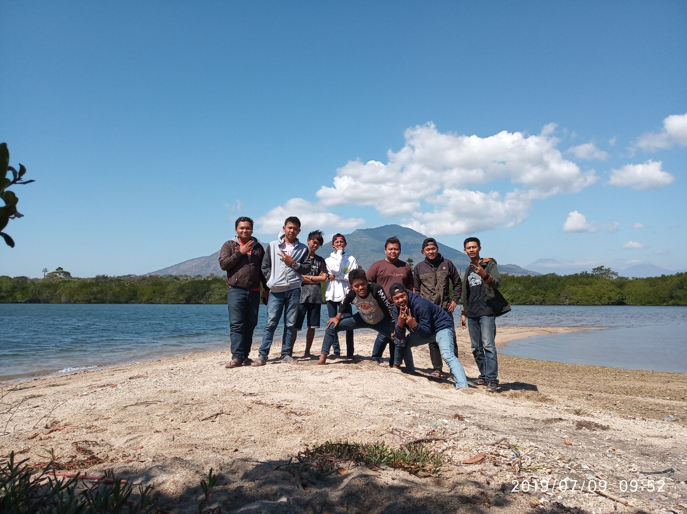

Pantai Bilik

Wisata Pantai Bilik Sejile Situbondo adalah salah satu tempat wisata yang berada terletak di dalam kawasan taman nasional baluran tepatnya di labuan merak kecamatan banyu putih kabupaten Situbondo, Jawa Timur, Indonesia.
cetak pdf